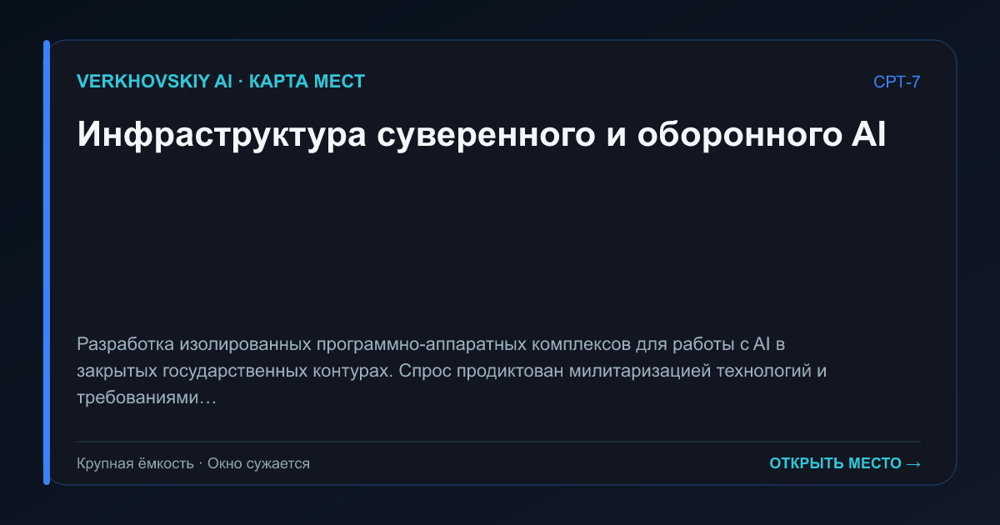

СРТ-7 · Институты производства знаний
Инфраструктура суверенного и оборонного AI
Разработка изолированных программно-аппаратных комплексов для работы с AI в закрытых государственных контурах. Спрос продиктован милитаризацией технологий и требованиями NSA/NATO по защите критических моделей от внешнего вмешательства. Включает в себя локальные LLM с гарантированным отсутствием утечек.